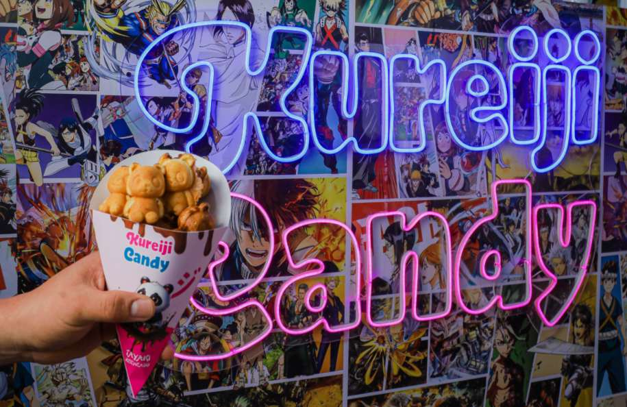
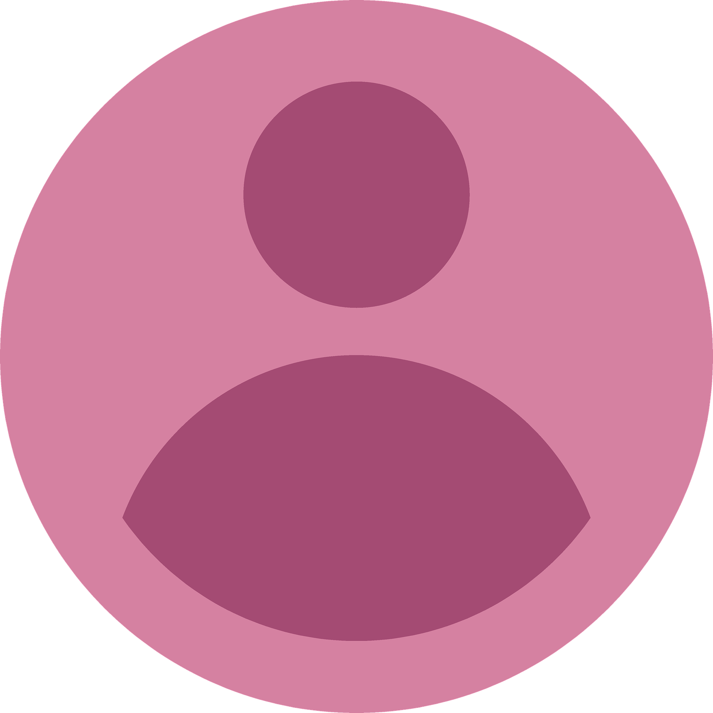

Nascemos da paixão por doces e pela cultura japonesa. "Kureiji" significa "louco" em japonês — porque somos loucos por confeitaria!

Fundadores & Criadores
A Kureiji Candy nasceu da união entre uma paixão pela gastronomia, criatividade e referências da cultura japonesa. A marca foi criada pelo casal Danilo Miki de Sousa e Jéssica Costa, que transformou essa paixão em um negócio cheio de personalidade.
A história começou com Danilo, que após anos trabalhando no setor de tecnologia decidiu mudar de carreira e seguir seu interesse pela culinária. Durante uma viagem ao Japão, em 2022, conheceu o tradicional sembei, um biscoito japonês crocante, e surgiu a ideia de trazer essa experiência para o Brasil.
Em 2024, nasceu a IKA, especializada em sembei com sabores diferenciados. Poucos meses depois, surgiu a Kureiji Candy, uma doceria que combina doces, cultura pop japonesa e criatividade.
Na Kureiji, os doces ganham formatos e referências inesperadas: personagens de anime e Pokémon, tayakis em formato de Crocs, pandas e outras criações. Entre os produtos que ganharam destaque nas redes sociais estão o Sopro do Dragão e a panacota de capivara.
Hoje, a Kureiji Candy busca transformar cada doce em uma experiência, unindo sabor, criatividade, cultura pop e diversão para despertar curiosidade e criar momentos que merecem ser compartilhados.

Danilo Miki de Sousa e Jéssica Cost
Jéssica Cost